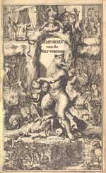
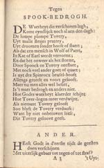
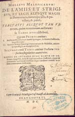

Denken over duivels
Vroegmoderne demonologie in de Leidse Universiteitsbibliotheek
9 februari – 11 maart 2006
Jan Frans van Dijkhuizen
| Inleiding | |
| De moderne West-Europese mens ziet zichzelf graag als verlicht, rationeel, seculier en niet-bijgelovig. Het premoderne verleden gebruikt hij daarbij graag als belichaming van alles wat hij zelf niet is: achterlijk, irrationeel, wandelend in de duisternis van geloof en bijgeloof. In deze visie fungeert het premoderne geloof in het bovennatuurlijke, met de Europese heksenvervolgingen als belangrijkste uiting, als symbool van de premoderne barbaarsheid. Werden tijdens de Middeleeuwen immers niet miljoenen onschuldige ‘heksen’ vermoord door verdwaasde fanatiekelingen die door middel van wrede martelingen de meest buitennissige bekentenissen aan hun slachtoffers hadden ontlokt? | |
| Zelf-felicitaties vormen echter zelden een goede leidraad bij het verwerven van | |
| inzicht, en deze visie is dan ook op zijn minst problematisch. De heksenvervolgingen zijn bijvoorbeeld geen Middeleeuws fenomeen, maar vonden vooral tijdens de zestiende en zeventiende eeuw plaats (ruwweg de vroegmoderne periode). Ze moeten dan ook vooral worden gezien in het licht van het ontstaan van de moderne wereld. Het aantal ‘heksen’ dat tussen ongeveer 1450 en 1750 in Europa is omgebracht is ongeveer 50.000, waarvan zo’n 20 tot 25 % man. Dat is uiteraard nog steeds een afschrikwekkend aantal, maar de slachtofferstatistieken van de twee wereldoorlogen zijn van een andere orde. Het moderne historische onderzoek naar het bovennatuurlijke in de vroegmoderne samenleving heeft zich dan ook afgekeerd van het moralistische perspectief dat het populaire denken over dit thema kleurt. Na de verschrikkingen van de twintigste eeuw is het moeilijk vol te houden dat de mens gestaag voortmarcheert op de weg van de vooruitgang. Geloof in het bovennatuurlijke moet dan ook niet worden gezien als een symptoom van achterlijkheid – dat wij niet meer in hekserij geloven, heeft meer te maken met sociale ontwikkelingen als verstedelijking en de decline of neighbourhood dan met ons ‘verlichte’ waardenpatroon. | |
| Het is juist belangrijk om in te zien dat ook een erudiet geleerde als de in | |
| Antwerpen geboren Jezuïet Martin Del Rio (1551-1608) – die niet minder dan negen talen vloeiend beheerste en bewonderd werd door de grote Leidse humanist Justus Lipsius – het bovennatuurlijke volstrekt serieus nam. Om te begrijpen waarom dit zo was, moeten we onze moderne attitudes opzij zetten, en ons afvragen wat begrippen als ‘demon’ en ‘magie’ precies betekenden binnen de vroegmoderne culturele context. Geleerde demonologen als Del Rio benaderden het bovennatuurlijke niet als onderwerp op zich, maar binnen een context van andere, gerelateerde thema’s, zoals de werking van de natuur, de aard van politiek gezag en religieuze orthodoxie, en van het verloop en betekenis van de geschiedenis. Voor veel vroegmoderne denkers was het geloof in de mogelijkheid van hekserij betekenisvol omdat het aansloot bij een reeks van meer algemene intellectuele onderwerpen. | |
| De titel van deze tentoonstelling – ‘Denken over duivels’ – onderstreept deze | |
| historiografische visie. ‘Denken over duivels’ biedt een miniatuur-overzicht van de geleerde vroegmoderne demonologie, variërend van het beruchte Malleus Maleficarum uit de late vijftiende eeuw tot Balthasar Bekkers sceptische Betoverde Wereld uit het eind van de zeventiende eeuw. Uit deze teksten ontstaat vooral een beeld van de plaats die demonologie innam binnen het vroegmoderne denken. De mechanismen die leidden tot de beschuldiging, vervolging en eventuele veroordeling van heksen vormen een onderwerp op zich; de geleerde teksten van deze tentoonstelling lenen zich maar zeer ten dele voor een onderzoek hiernaar. De eerste vitrine is gewijd aan eerstgenoemde tekst, waarvan de eerste editie verscheen in 1486. De tweede vitrine bevat werken van enkele van de belangrijkste demonologen uit de zestiende en zeventiende eeuw: de eerdergenoemde Del Rio; de Fransman Jean Bodin (1520-1596), die vooral bekend is als politiek denker en de katholieke priester Nicholas Rémy (1534-1600). Vitrine 3 is gewijd aan het traktaat Daemonologie van de Engels-Schotse koning James I (1566-1625), en laat de verbanden zien tussen het denken over hekserij en politiek. James I was ook zeer geïnteresseerd in de (on)mogelijkheid van demonische bezetenheid en deelt zijn vitrine daarom met Girolamo Menghi (1529-1609), auteur van een bekend handboek voor het uitdrijven van duivels. Vitrine 4 en 5 tonen demonologische werken van theologen als de Engelse Calvinist William Perkins (1558-1602) en de zestiende-eeuwse Nederlandse priester Jacob Vallick. Perkins’ ideeën over magie en hekserij hingen nauw samen met zijn ideeën over het katholicisme en de naderende eindtijd. Vitrine 7 bevat tekst over het thema van het duivelspact. Vitrines 6, 8 en 9 zijn gewijd aan drie auteurs die, elk om hun eigen, niet altijd even verlichte redenen, sceptisch stonden tegenover het geloof in het bovennatuurlijke: de Engelsman Reginald Scot (1538-1599), de Nederlandse arts Johann Weyer (1515-1588) en de theoloog Balthasar Bekker (1634-1698). | |
|  |  |  |
| volgende pagina | |